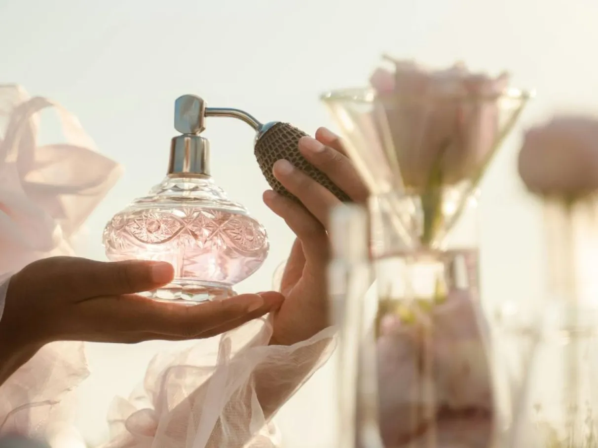

Sobre

Perfumes são combinações complexas de fragrâncias que expressam estilo, personalidade e cultura, compostos por notas de topo, coração e base, e classificados por concentração e famílias olfativas.
Produtos

Criar um perfume é combinar fragrâncias de maneira equilibrada para formar um aroma agradável e duradouro. Um perfume normalmente possui três tipos de notas: as notas de topo, que são sentidas primeiro e evaporam rapidamente; as notas de coração, que definem a personalidade da fragrância; e as notas de base, responsáveis pela fixação e profundidade do aroma. Para produzir um perfume, utilizam-se óleos essenciais naturais ou essências aromáticas misturados a álcool de cereais ou outro líquido carreador.
Produtos
"perfumes e suas produções"Os perfumes possuem muitas variedades, e cada tipo é criado para oferecer diferentes sensações, estilos e durações na pele. Eles podem ser feitos com aromas florais, cítricos, amadeirados, doces, orientais ou refrescantes. Cada composição utiliza produtos específicos, como óleos essenciais, essências aromáticas, álcool de cereais e fixadores, que ajudam a criar fragrâncias únicas e agradáveis..
Feedbacks

Os perfumes costumam receber feedbacks diferentes dependendo do aroma, da duração e do gosto de cada pessoa. Perfumes florais geralmente recebem comentários positivos por serem suaves, delicados e agradáveis para o uso diário. Já os perfumes doces são elogiados por serem marcantes e aconchegantes, embora algumas pessoas os considerem fortes demais em ambientes fechados.